Seperation
Course Content
1. Chapter 1: Introduction
2. Chapter 2 : Pretreatment of fermentation broth
3. Chapter 3: Solid liquid separation
4. Chapter 4 microbial cell disruption
5. Chapter 5 Extraction
6. Chapter 6 Membrane Separation Technology
7. Chapter 7. Ion exchange
8. Chapter8. Crystallization and drying
9. Electronic books download
1. Dr. Menglei Xia
2. Dr. Wenchao Li
1. Timetable of this semester (2020-2021)
2. Syllabus of Downstream Processing of Bioengineering
Seperation
»
1.
Timetable of this semester (2020-2021)
View page source
1.
Timetable of this semester (2020-2021)
¶
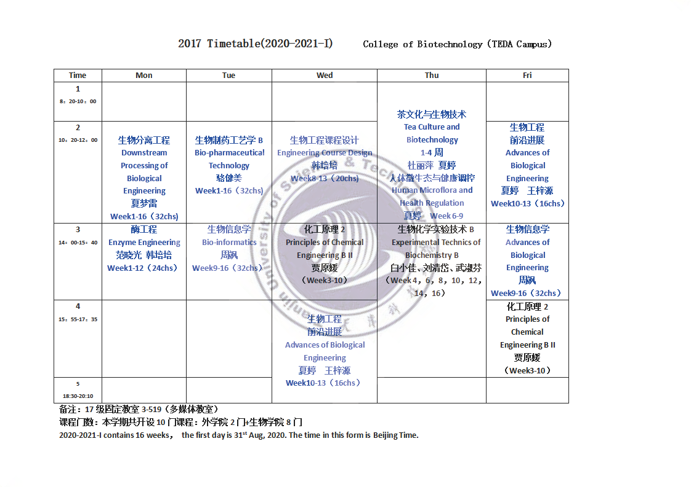
2.
Syllabus of Downstream Processing of Bioengineering
¶
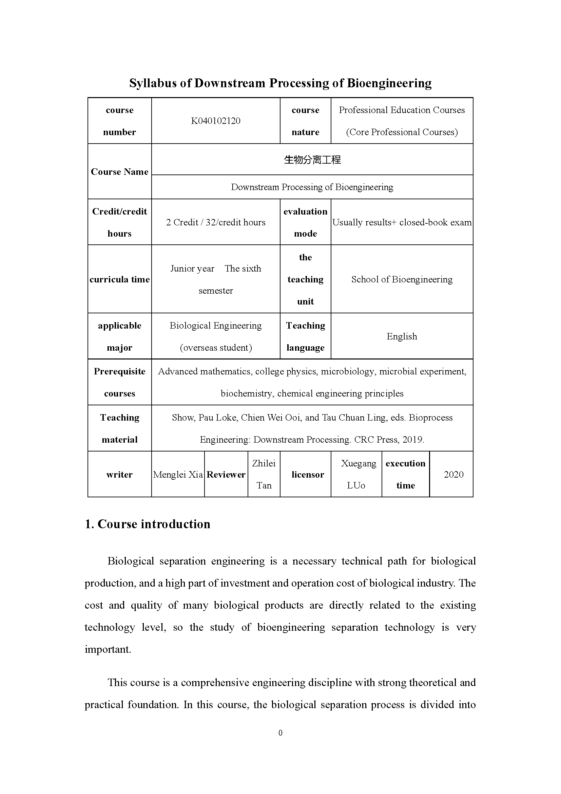 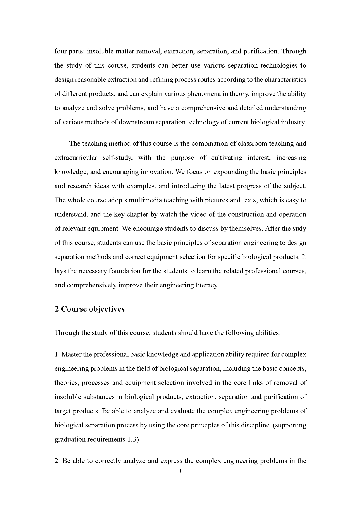 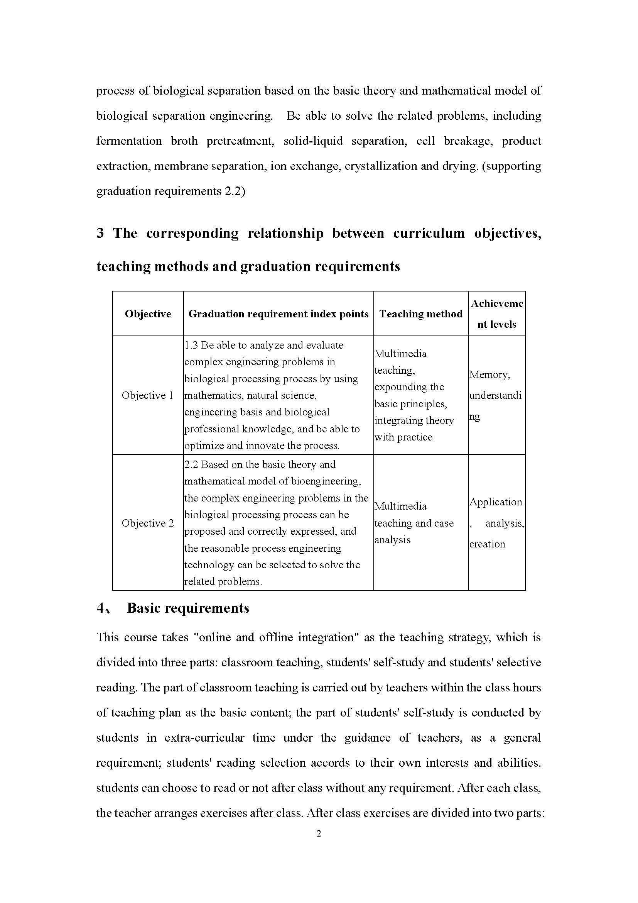 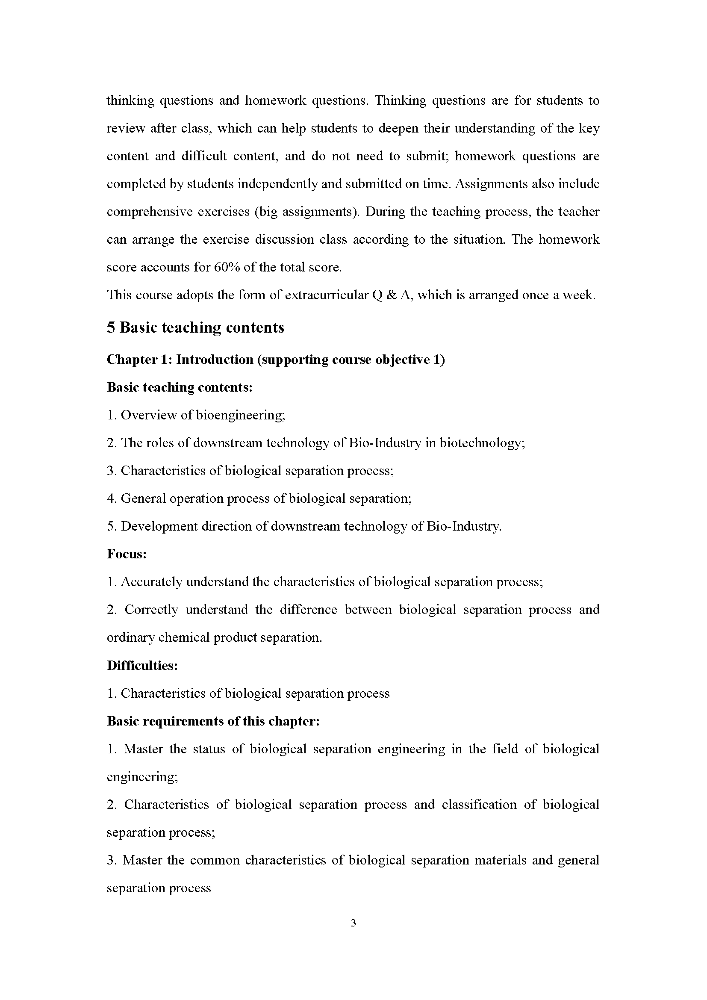 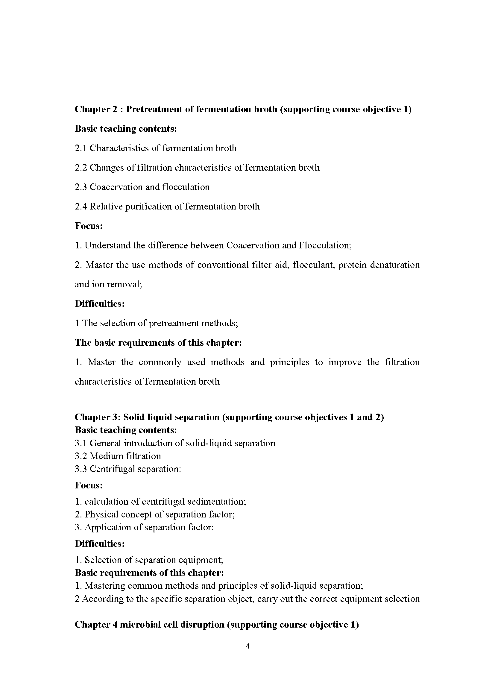 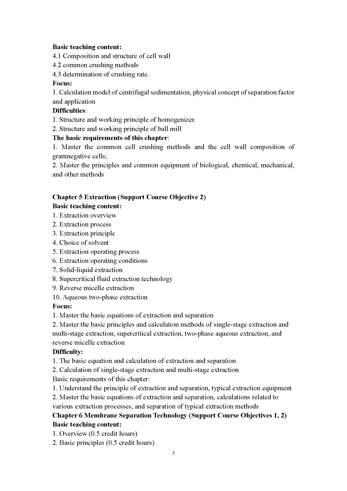 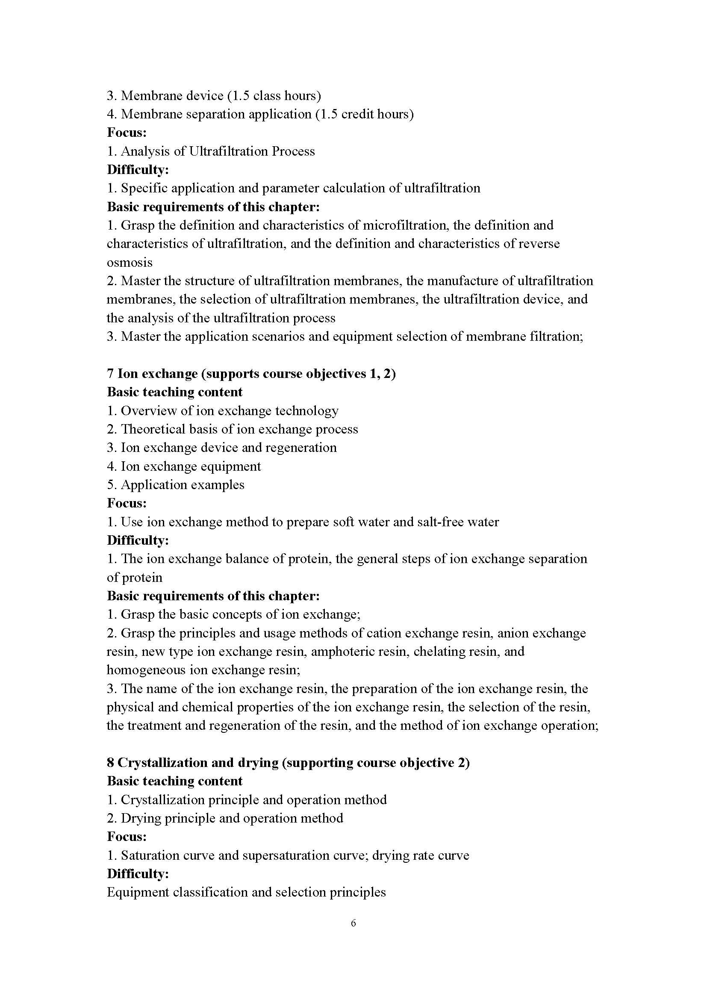 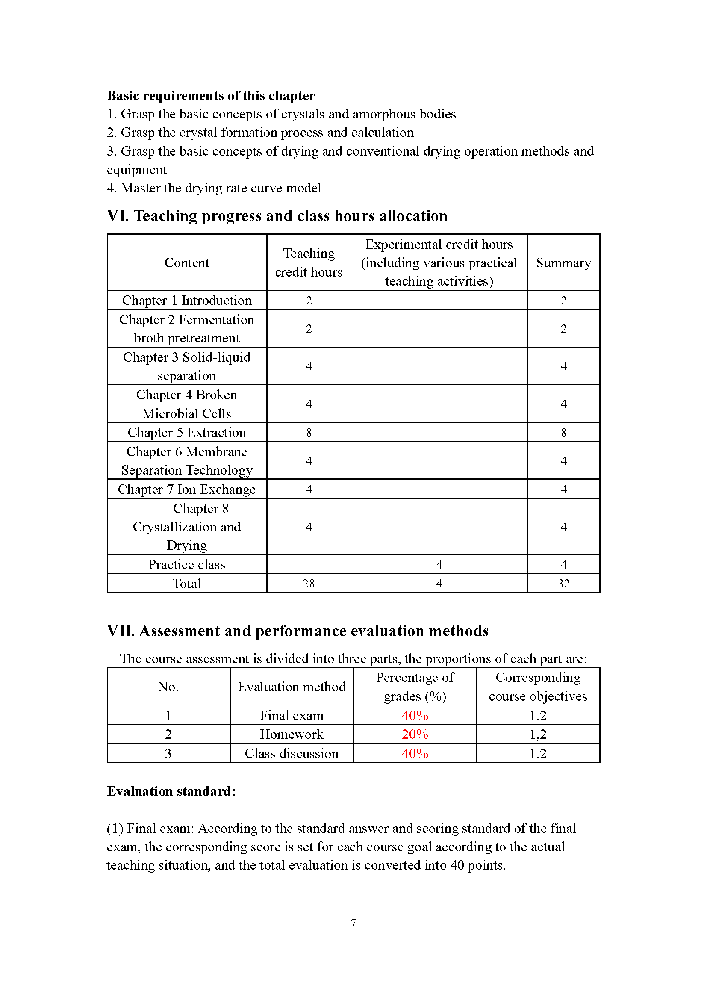 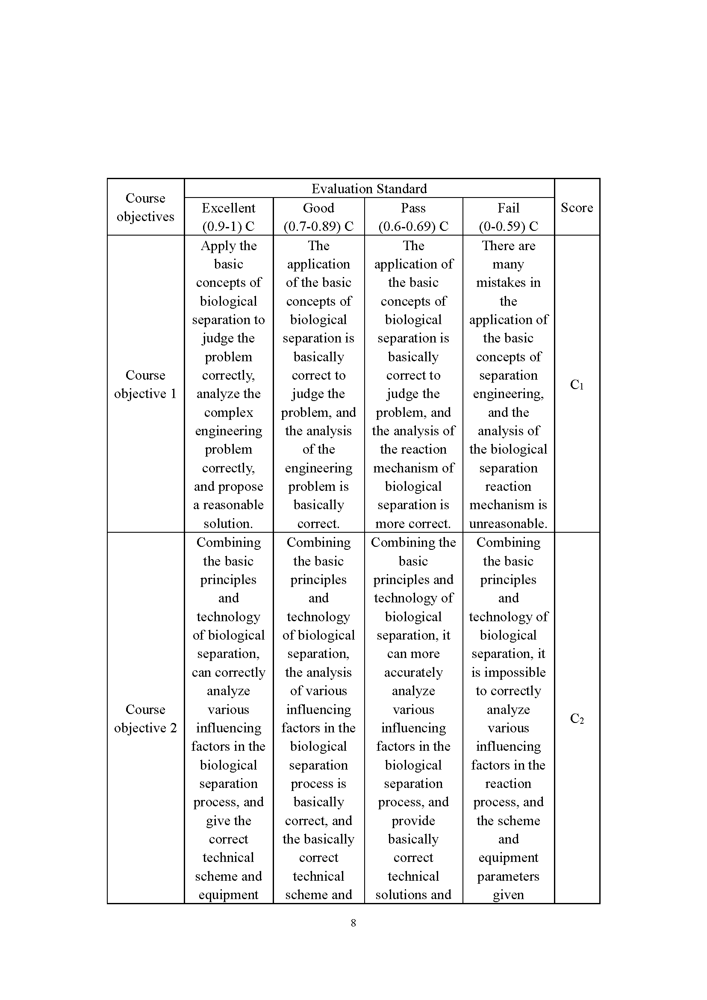 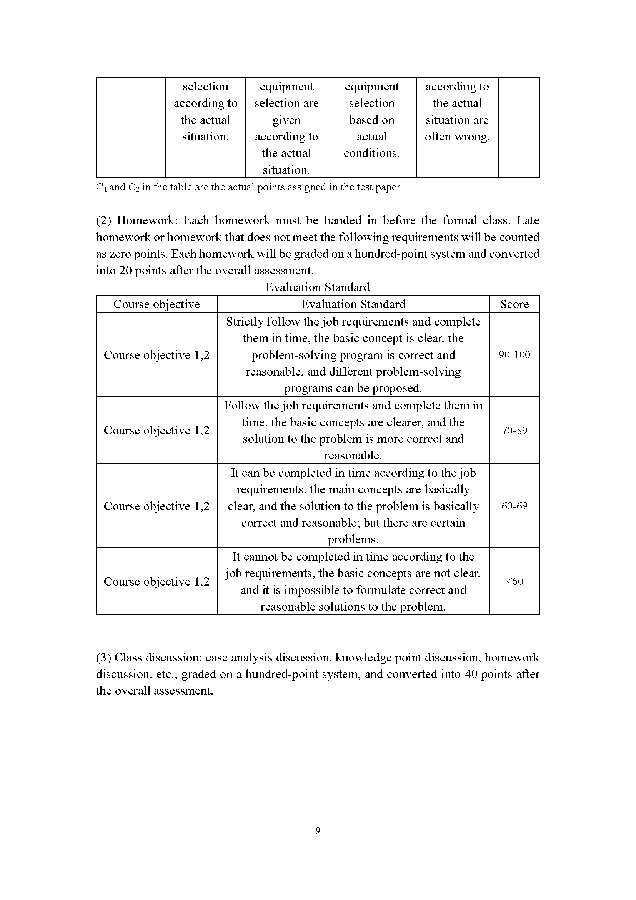 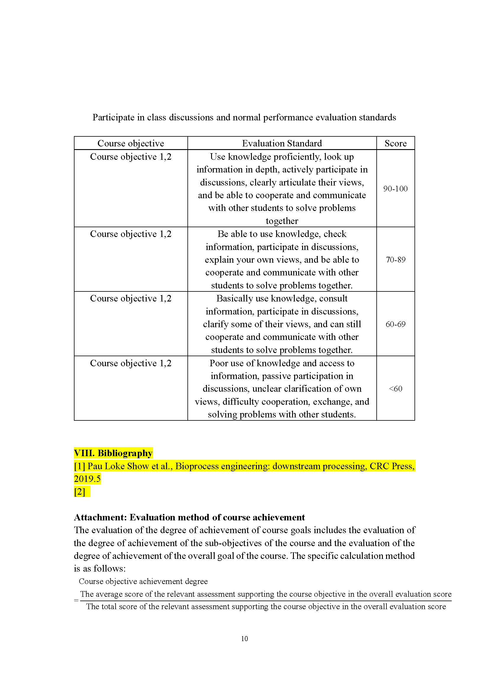 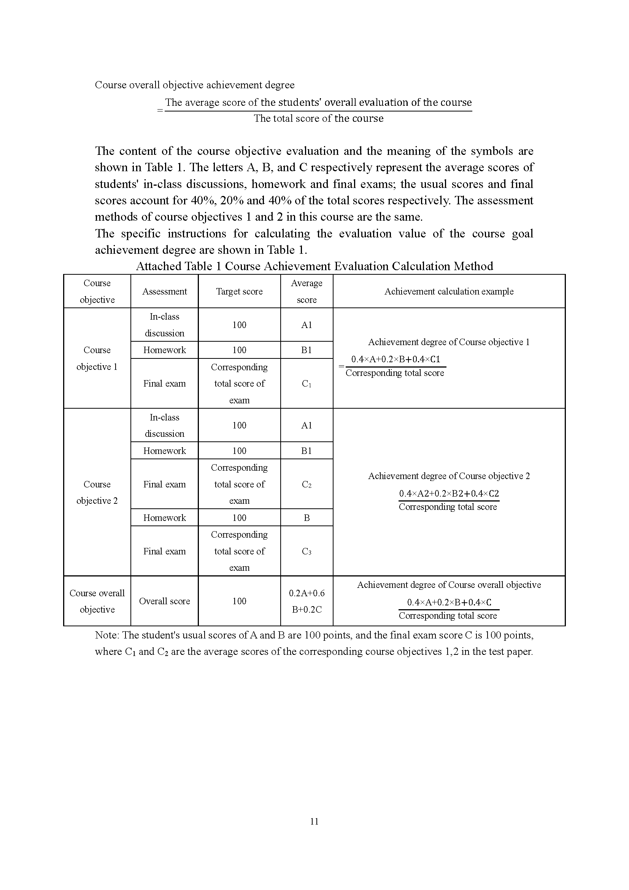